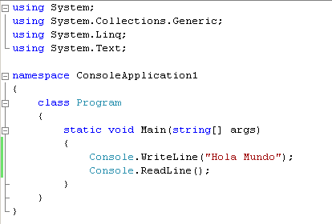
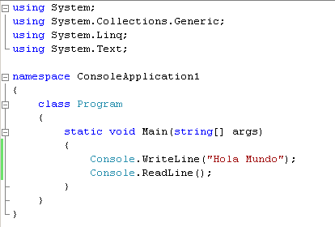

La esencia de C# radica en su búsqueda del equilibrio perfecto entre control y productividad. A diferencia de lenguajes puramente académicos, cada característica de C# responde a necesidades prácticas del desarrollo comercial. Su sistema de tipos, aunque estricto, incorpora flexibilidad mediante mecanismos como boxing/unboxing y, más recientemente, tipos dinámicos. La orientación a objetos no es un mero añadido, sino el núcleo alrededor del cual gira todo el ecosistema, evidenciado en construcciones como propiedades, indexadores y eventos como ciudadanos de primera clase. El lenguaje ha evolucionado desde sus raíces como clon mejorado de Java hasta convertirse en un laboratorio de ideas innovadoras. LINQ (Language Integrated Query), introducido en 2007, revolucionó la manipulación de datos al llevar conceptos funcionales al mainstream empresarial. El modelo async/await, adoptado posteriormente por otros lenguajes, resolvió elegantemente el problema de la programación asíncrona sin caer en el "callback hell" que plagaba a JavaScript.Tipos de Datos
La verdadera potencia de C# trasciende el lenguaje mismo, residiendo en la sinergia con la Common Language Runtime (CLR) y el amplio marco de trabajo .NET. Esta plataforma proporciona servicios esenciales como gestión automática de memoria, seguridad de tipos en tiempo de ejecución y compilación just-in-time, liberando a los desarrolladores de preocupaciones de bajo nivel. La biblioteca de clases base (BCL) ofrece implementaciones optimizadas de estructuras de datos, algoritmos y abstracciones para E/S, red y concurrencia. Visual Studio, el IDE insignia para desarrollo C#, establece estándares de productividad con características como IntelliSense, refactorización en vivo y potentes herramientas de depuración. El ecosistema se complementa con NuGet para gestión de paquetes, Entity Framework para acceso a datos y ASP.NET Core para desarrollo web, formando un stack tecnológico coherente y bien integrado.Ventajas
En el ámbito empresarial, C# ha demostrado su valía en sistemas transaccionales de gran escala, donde su equilibrio entre rendimiento y mantenibilidad brilla con especial intensidad. Bancos, compañías de seguros y entidades gubernamentales confían en aplicaciones construidas sobre .NET para procesar millones de operaciones diarias con confiabilidad. La industria del videojuego encontró en C# un aliado inesperado a través de Unity, donde su facilidad de aprendizaje y capacidades de scripting lo convirtieron en la opción predilecta para desarrolladores independientes y estudios medianos. Hoy, títulos exitosos como Cuphead y Hollow Knight atestiguan la viabilidad de C# en este competitivo sector. En el frente tecnológico, la apuesta por el código abierto y la multiplataforma con .NET Core ha permitido a C# trascender su nicho tradicional, conquistando espacios en desarrollo para Linux y contenedores Docker, mientras que MAUI (Multi-platform App UI) extiende su alcance al desarrollo móvil nativo.Desventajas
A pesar de sus virtudes, C# no está exento de críticas. Su estrecha asociación histórica con Microsoft generó desconfianza en círculos partidarios del software libre, percepción que sólo comenzó a disiparse con la liberación de .NET Core. El modelo de memoria gestionada, aunque reduce errores comunes, introduce una sobrecarga que lo hace menos apto para sistemas con restricciones extremas de recursos. La rápida evolución del lenguaje, con nuevas características añadidas casi anualmente, plantea el desafío de mantener equipos de desarrollo actualizados. Conceptos como expresiones lambda, árboles de expresión y pattern matching, aunque poderosos, requieren inversión en capacitación para ser aprovechados plenamente.
 La forma de escribir un hola mundo en C# es: 
La forma de escribir un hola mundo en C# es: 